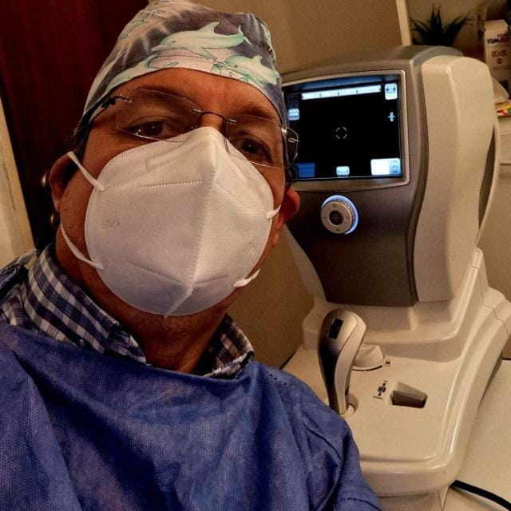
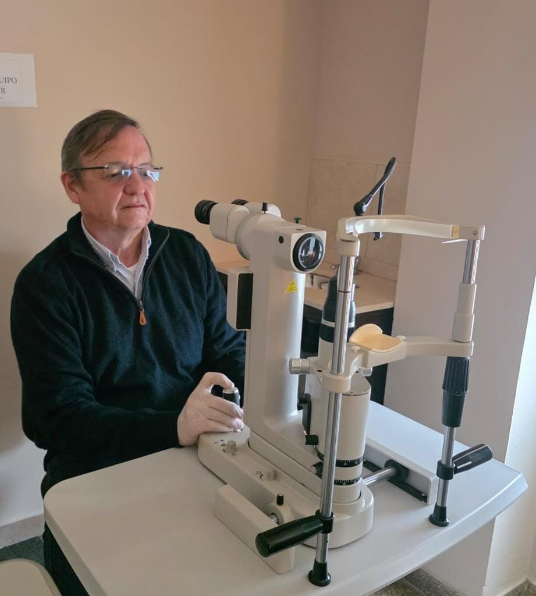

OFTALMOLOGÍA INTEGRAL
Dr. Gustavo D. Fiori
Cuidamos tu salud visual con atención personalizada, diagnóstico y tratamientos especializados.
Solicitar turno por WhatsAppCentro Médico · Corrientes Capital

Prestaciones
- Exámenes visuales
- Recetas de anteojos
- Glaucoma
- Cirugía de cataratas
- Cirugía de pterigión
- Cirugía de chalazión
- YAG Láser

Dr. Gustavo D. Fiori
Médico Oftalmólogo
Especialista en oftalmología integral, dedicado al diagnóstico y tratamiento de la salud ocular.
Consultorio
Centro Médico
Corrientes Capital
Horarios de atención
Lunes, martes, jueves y viernes:
10:00 a 13:00 hs · 17:00 a 20:00 hs
Miércoles:
09:00 a 12:00 hs · 17:00 a 20:00 hs
Solicitar turno
Los turnos se solicitan exclusivamente por mensaje de WhatsApp.
No se aceptan llamadas telefónicas.
Solicitar turno por WhatsApp